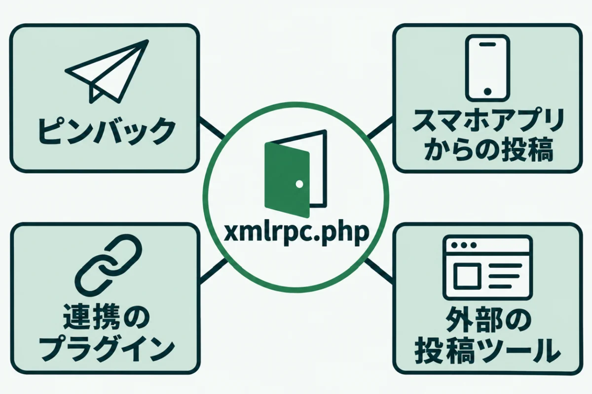
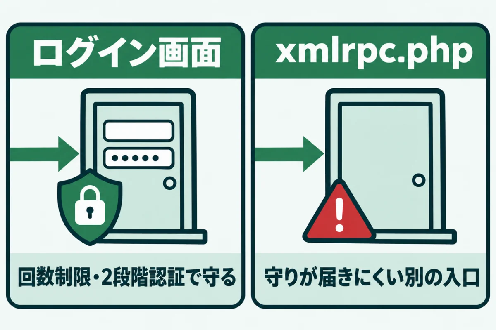
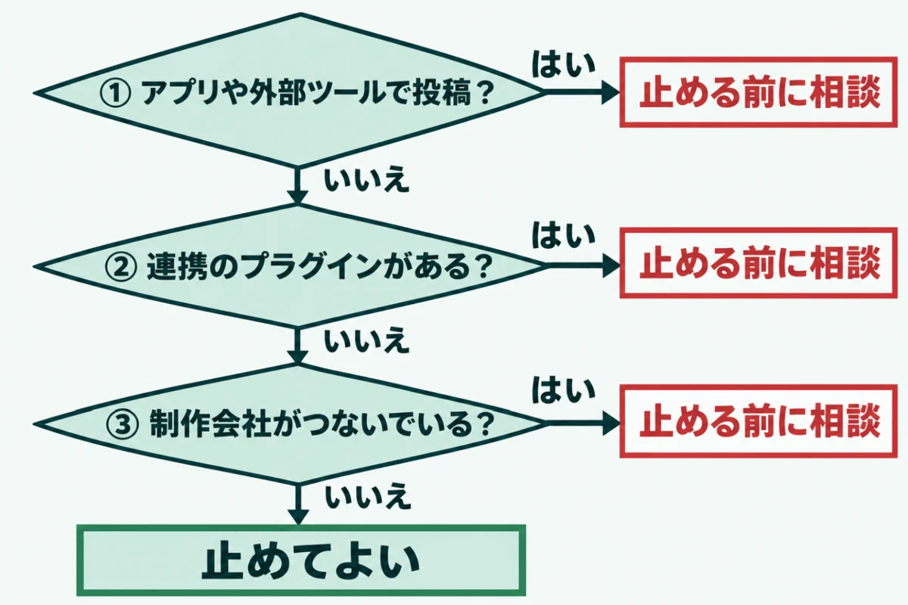
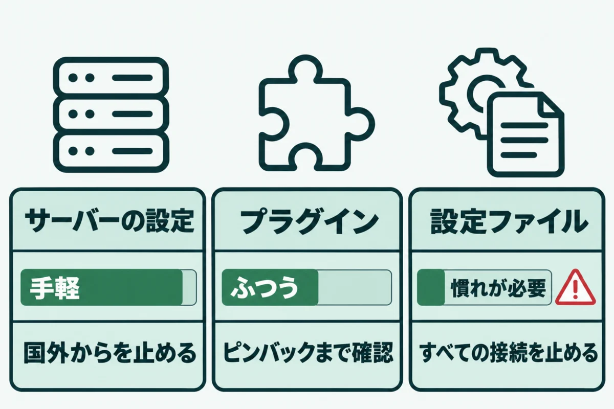
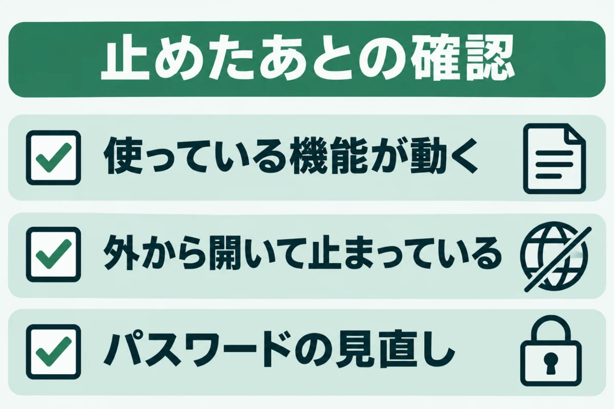

WordPressのxmlrpc.phpとは？止めるべきかの判断と安全な止め方

「xmlrpc.phpは止めたほうがいいと聞いた。でも、止めて困ることはないのか」と迷っていませんか？
xmlrpc.phpは、WordPressを外から操作するための古い窓口です。使っていなければ止めて構いませんが、使っている機能があると動かなくなります。
この記事では、xmlrpc.phpを止めるべきかの判断のしかたと、安全な止め方を順に紹介しましょう。止めたあとの確かめ方もまとめました。
もとにしたのは、WordPressの公式の資料とエックスサーバーのマニュアルです。運営者の自社サイトで実際に確かめた結果も入れています。設定を変える前に、一度通して読んでおくと安心でしょう。
xmlrpc.phpとは？無効化を考える前に知りたい役割

xmlrpc.phpは、WordPressの本体に最初から入っているファイルです。管理画面を開かずに、外から投稿などを行う窓口として働きます。
止めるかどうかを決める前に、何に使われているかを知っておくことが大切です。使っている機能がなければ止めても困りませんが、知らずに止めると連携が切れます。まずは役割と、今の使われ方を見ていきましょう。
外からWordPressを操作するための窓口
エックスサーバーのマニュアルは、XML-RPCを投稿に使う仕組みと説明しています。スマートフォンのアプリや外部のシステムから、記事や画像を送るための窓口です。
この窓口は、サイトのアドレスの後ろに「/xmlrpc.php」を付けた場所にあります。ユーザー名とパスワードを送れば、外から投稿できる作りです。便利な反面、ログイン画面を通らずにパスワードを試せる入口にもなります。WordPressを入れた時点から、この窓口は開いた状態です。
ピンバックもこの窓口を通る
xmlrpc.phpは、ピンバックの受け口でもあります。ピンバックは、ほかのブログからリンクされたことを知らせ合う仕組みです。パスワードがなくても受け付けます。
WordPressには、XML-RPCの一部を止める「xmlrpc_enabled」があるのです。ただし公式の説明では、止まるのはパスワードが要る操作だけで、ピンバックは止まらないとされています。止めたつもりでも窓口が開いたままになることがあるので、止め方を選ぶときに気をつけてください。
使っていないサイトも多い
会社のホームページの多くは、管理画面から記事を書いて更新しています。スマホのアプリや外部のツールから投稿していなければ、この窓口を使う場面はほとんどありません。
使っていないのに開いたままの窓口は、守る手間だけがかかる入口です。ただ、連携のプラグインや制作会社のツールが、知らないうちに使っていることもあります。止める前に、何がつながっているかを確かめておきましょう。確かめ方は、次の判断のポイントで紹介します。
xmlrpc.phpが狙われる理由と無効化を考える場面

xmlrpc.phpは、ログイン画面とは別の入口です。ログイン画面だけを守っても、この窓口は開いたままになります。
攻撃する側は、守りの薄い入口を探して自動で試してくるでしょう。使っていない窓口なら、止めてしまうのがいちばん手間のかからない守り方です。ここからは、狙われる理由を3つの面から見ていきましょう。
ログイン画面を通らずにパスワードを試せる
xmlrpc.phpには、ユーザー名とパスワードを送って操作する仕組みがあります。そのため、ログイン画面と同じように、パスワードの当てずっぽうの入力に使われることがあるのです。
ログイン画面に入力の回数の制限をかけていても、この窓口には別に制限をかける必要があります。プラグインによっては、ログイン画面だけを守り、この窓口は対象外のこともあるでしょう。使っている守りのプラグインが、XML-RPCも対象にしているかを確かめてください。ログイン名が外から見えていると、狙われやすさはさらに増します。
2段階認証の外側になりやすい
2段階認証のプラグインは、主にブラウザのログイン画面を守ります。Two Factorというプラグインでは、外からの接続に専用のパスワードを使う作りです。
その専用のパスワードを、アプリケーションパスワードと呼びます。REST APIとXML-RPCで使えるもので、使わなくなったものが残ると抜け道になりかねません。運営者の自社サイトでも、使っていないアプリケーションパスワードが残っていました。2段階認証の手順は、次の記事で紹介しています。WordPressのログインに2段階認証を設定する方法｜プラグイン選びと締め出されない準備
使っていないなら止めるのが早い
窓口を開けたまま守るには、回数の制限やアクセス元の制限を重ねる必要があります。どれも、設定を続けて見直す手間がかかるのです。
一方で、使っていない窓口を止めれば、その入口からの試し打ちはそもそも届かなくなります。使う予定がないなら、止めるのがいちばん確実でしょう。設定にかかる時間も、数分ほどで済みます。反対に、アプリなどで使っている場合は、止めずに守りを足す方法を選んでください。どちらにするかは、次の3つのポイントで決められます。
xmlrpc.phpを無効化してよいかを決める3つのポイント

止めてよいかは、この窓口を使っているものがあるかで決まります。3つとも当てはまらなければ、止めて構いません。
1つでも当てはまるときは、すぐに止めずに、使っている相手と相談してください。止める代わりに、アクセス元を国内に絞る方法もあります。迷ったら、まず次の3つを書き出してみましょう。書き出した一覧は、制作会社に相談するときにも役立ちます。
① スマホアプリや外部のツールで投稿しているか
スマホのアプリからブログを書いている人は、この窓口を使っていることがあります。外部の記事作成ツールから、直接WordPressに投稿している場合も同じです。
社内で更新を担当している人に、管理画面以外から投稿しているかを聞いてみましょう。管理画面からしか更新していないなら、まず大丈夫です。使っている場合は、そのアプリやツールの案内で、どの窓口を使うかを確かめてください。新しいものは、REST APIで動いていることもあります。
② 連携のプラグインが入っているか
プラグインの中には、外部のサービスとつなぐためにこの窓口を使うものがあります。エックスサーバーのマニュアルでも、Jetpackの接続は制限の対象外とされているほどです。
プラグインの一覧を開き、外部のサービスとつながるものがないかを見てください。名前に分からないものがあれば、説明のページで確かめます。止める前に、そのプラグインがXML-RPCを使うかどうかを調べておくと安心です。使っていないプラグインなら、この機会に削除してしまいましょう。
③ 制作会社や外部のサービスがつないでいないか
制作会社が保守のために、外から更新の状態を見ていることがあります。バックアップや監視の外部サービスが、この窓口でつないでいることも考えられるでしょう。
保守を任せているなら、止める前に制作会社へ一言伝えておくのが安全です。止めたあとに保守の仕組みが動かなくなると、気づくのが遅れます。契約している外部のサービスがあれば、その案内でXML-RPCを使うかを確かめてください。分からないときは、止める日時を決めて連絡しておけば、何か起きてもすぐ戻せます。
xmlrpc.phpを無効化する方法

止め方は、サーバーの設定、プラグイン、設定ファイルの3つに分かれます。手軽なのはサーバーの設定画面です。
どの方法でも、本体のxmlrpc.phpのファイルそのものは消しません。本体を更新すると、消したファイルが元に戻るからです。作業の前には、念のためバックアップを取っておいてください。自分に合う方法を、次の3つから選びましょう。
サーバーの設定で止める
エックスサーバーには、サーバーパネルに「XML-RPC APIアクセス制限」という設定があります。「WordPressセキュリティ設定」の中の項目です。オンにすると、国外や一部のホスティングサービスからの接続が止まります。
マニュアルは、ふだんはオンのまま使うことを強く勧めているのです。国内の回線からの接続は、ふだんどおり通ります。国外のサーバーから使う場合は、オフにしてプラグインで守るのが公式の案内です。ほかのサーバー会社にも似た設定があるので、管理画面を探してみてください。
プラグインで止める
サーバーに設定がない場合は、XML-RPCを止めるプラグインを使う方法があります。エックスサーバーのマニュアルでも、ピンバックを止めるプラグインを入れる方法が紹介されているのです。
選ぶときは、ピンバックまで止まるかどうかを説明のページで確かめましょう。「xmlrpc_enabled」だけを使うものは、ピンバックが残ります。守りの機能をまとめたプラグインにも、XML-RPCを止める設定が入っていることがあるのです。新しく入れる前に、今のプラグインの設定を見てみてください。
設定ファイルで接続を拒否する
サーバーの設定ファイルで、xmlrpc.phpへの接続をまとめて拒否する方法もあります。WordPressを通る前に止まるので、サーバーへの負担も小さく済むでしょう。
ただし、書き方を間違えると、サイト全体が表示されなくなるおそれがあるのです。設定ファイルを触るのに慣れていなければ、サーバーの設定かプラグインを選んでください。触る場合は、元のファイルを控えてから少しずつ直しましょう。制作会社に頼むときは、xmlrpc.phpだけを止めたいと伝えれば話が早く進みます。
xmlrpc.phpを無効化したあとの確認

止めたあとは、困る機能が出ていないかと、本当に止まったかの両方を確かめます。止めたつもりで開いたままの状態を防ぐためです。
確かめた日と結果は、作業の記録に残しておきましょう。あとで制作会社が設定を変えたときにも、元の状態が分かります。次の2つを、止めた当日に試してください。どちらも、数分あれば終わる確かめ方です。
使っている機能が動くかを確かめる
まず、管理画面から記事の下書きを保存し、表示に問題がないかを見ます。スマホのアプリや外部のツールを使っている人がいれば、投稿できるかを試してもらいましょう。
連携のプラグインがある場合は、その設定画面で接続が切れていないかを見てください。数日たってから気づく不具合もあるので、1週間ほどは様子を見ます。不具合が出たら、いったん設定を戻し、使っている相手と相談しましょう。戻す手順を先に控えておくと、慌てずに済みます。
外から開いて止まっているかを確かめる
ブラウザでサイトのアドレスの後ろに「/xmlrpc.php」を付けて開いてみます。止める前は、「POSTのリクエストだけを受け付ける」という意味の英語の文が出ることが多いです。
運営者の自社サイトでは、国外の回線から開くと「403 Forbidden」と出ました。接続が止まっていることを、この表示で確かめています。国内から開くと、まだ英語の文が出る場合もあるでしょう。これは国外だけを止める設定のためで、故障ではありません。すべてを止めたいときは、プラグインか設定ファイルの方法を選んでください。
URLを入れるだけで、ログイン名の見え方やWordPressの版など8項目を無料で判定します。登録はいりません。
無料で診断するxmlrpc.phpの無効化に関するよくある質問
xmlrpc.phpのファイルを削除してもいいですか？
ファイルの削除はおすすめしません。WordPressの本体を更新すると、消したファイルが元に戻るからです。気づかないうちに窓口が開き直ってしまうため、守りとしては長続きしません。止めたいときは、サーバーの設定かプラグイン、設定ファイルで接続を止める方法を選んでください。本体のファイルには、手を加えないのが基本です。
止めると、サイトの表示に影響しますか？
ふつうのページの表示には影響しません。xmlrpc.phpは外から操作するための窓口で、訪問者がページを見るときには使われないからです。管理画面からの更新も、そのまま続けられます。影響が出るのは、スマホのアプリや外部のツール、連携のプラグインを使っている場合です。止めたあとは、念のため主なページと管理画面を開いて確かめておきましょう。
REST APIも止めたほうがいいですか？
REST APIは、今のWordPressの管理画面そのものが使っている仕組みです。まとめて止めると、記事の編集画面が動かなくなることがあります。止めるのではなく、ログイン名が見えないようにするなど、必要な部分だけを絞るのが安全でしょう。エックスサーバーには、国外からのREST APIへの接続を止める設定もあります。設定を変えたら、記事の編集と保存ができるかを必ず確かめてください。
Jetpackを使っています。止めても大丈夫ですか？
Jetpackは、WordPress.comとつなぐためにXML-RPCを使うことがあります。エックスサーバーの設定は、Jetpackからの接続を制限の対象外にしている作りです。プラグインで完全に止める場合は、Jetpackの機能が動かなくなるおそれがあります。止める前に、Jetpackの案内で必要な接続を確かめてください。迷ったときは、サーバーの設定で国外からの接続だけを止める方法を選ぶとよいでしょう。
無料の診断で、xmlrpc.phpが開いているかは分かりますか？
スキゼロの無料簡易診断は、xmlrpc.phpが開いているかどうかは調べていません。調べるのは、ログイン名の見え方や、WordPressとプラグインの版など、外から見える8項目です。xmlrpc.phpは、記事で紹介したようにブラウザで開くだけで確かめられます。ログイン名が見えていると、この窓口でもパスワードを試されやすくなるのです。あわせて確かめておくと、入口の守りを見直すきっかけになるでしょう。
まとめ
xmlrpc.phpは、外からWordPressを操作するための古い窓口です。ログイン画面とは別の入口なので、使っていなければ止めて構いません。
止める前に、アプリや連携のプラグイン、制作会社のツールが使っていないかを確かめましょう。止めたら、動く機能と止まった窓口の両方を確かめることが大切です。
まずは、今の状態を知るところから。
URLを入れるだけで、数十秒で判定が出ます。登録はいりません。